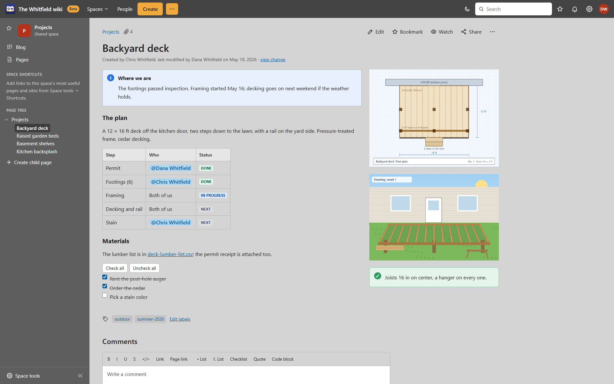
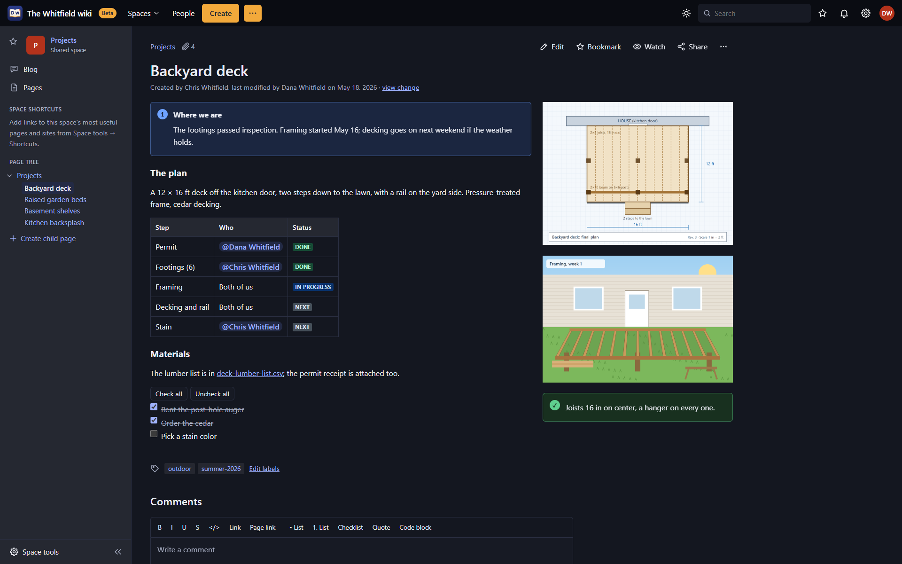
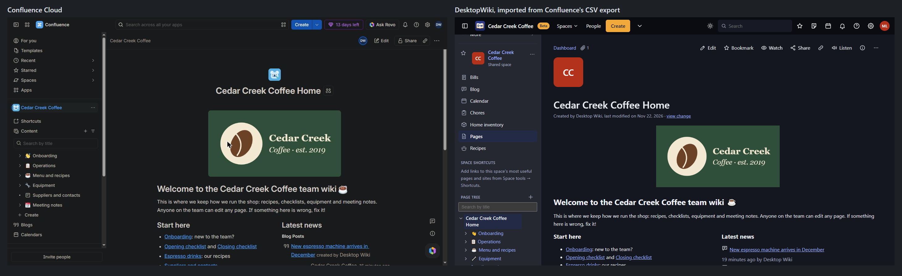
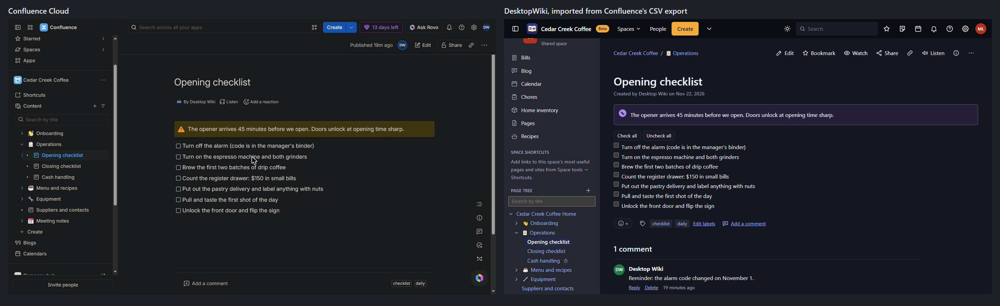
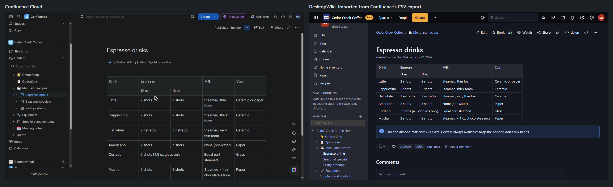
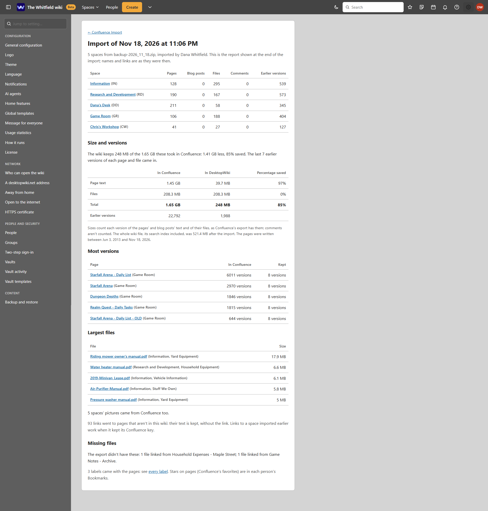
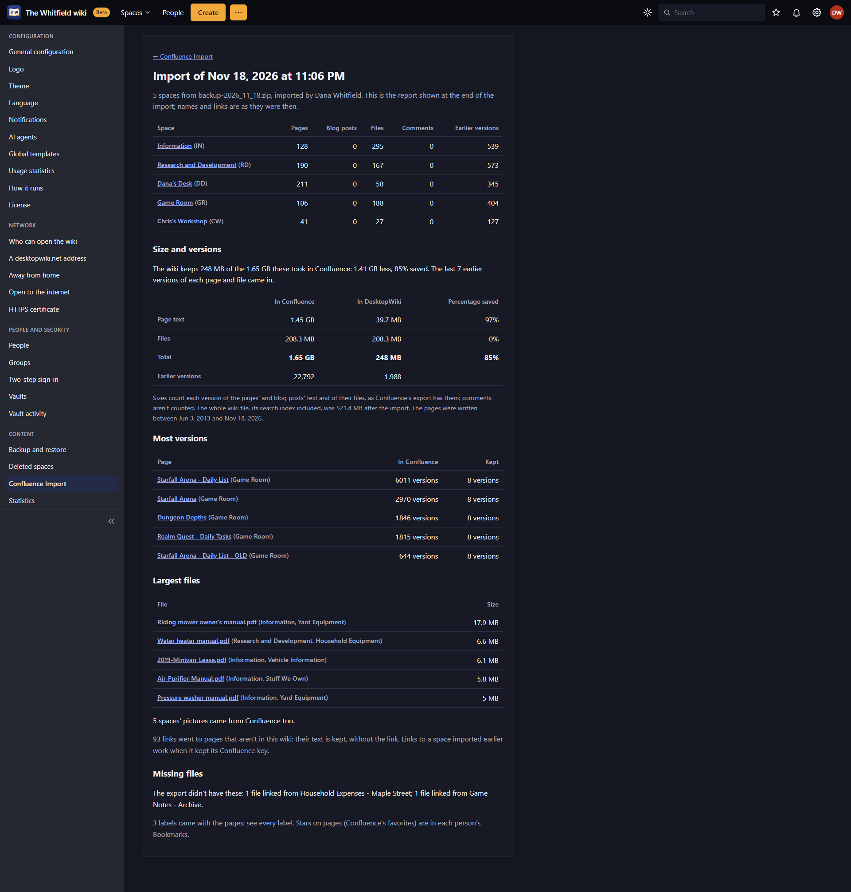
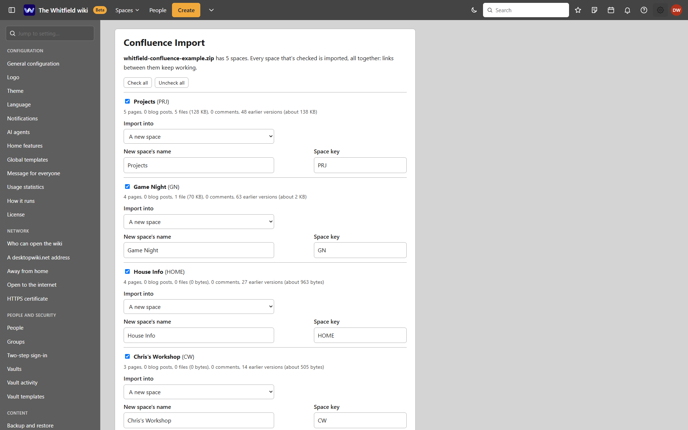
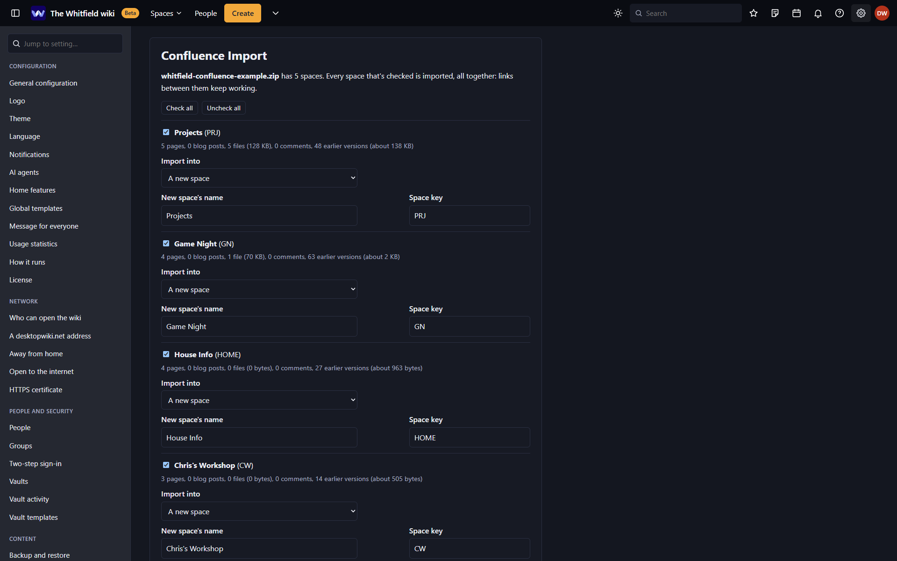

A space, or the whole site
Import a Confluence space export or a whole-site backup, every space at once. Before anything comes in, DesktopWiki reads the export and shows each space with its pages, files, comments and earlier versions; check the ones you want and give each a name and a key.
Confluence Cloud too
Confluence Cloud exports a space as CSV files in a .zip, and DesktopWiki reads that export as well. Add Cloud’s list of people (Export users), and names come across in place of Cloud’s account numbers. The import ends by comparing what the export holds with what came in.
What comes across
Pages and blog posts, attachments and their earlier versions, comments, labels, templates, profile pictures, and who wrote what and when, with as many earlier versions of each page as you choose.
Pages that look the same
Layouts, panels and macros come across: columns and sidebars, info, tip and warning panels, status labels, @mentions, checklists, pictures sized as they were and the lists of pages under a page. Anything that can't be converted is kept as a marked placeholder, never dropped.
Links keep working
Spaces imported together are imported all at once, so links from one space to another still lead where they did.
Try it, then import again
Try DesktopWiki for a few days, then import again: each space replaces the one that came in before, or erase the wiki's spaces and start over.
From Confluence Cloud
A test space in Confluence Cloud, exported as CSV and imported into DesktopWiki. Both are shown in dark mode.



How much space it saves
These numbers come from a real import: a family’s wiki, kept in Confluence since 2013, five spaces and 676 pages. Most of what Confluence kept was earlier versions, 22,792 of them, many from lists updated every day. DesktopWiki keeps as many earlier versions as you choose; this family kept the last 7 of each page and file.
| What | In Confluence | In DesktopWiki | Percentage saved |
|---|---|---|---|
| Page text | 1.45 GB | 39.7 MB | 97% |
| Files | 208.3 MB | 208.3 MB | 0% |
| Total | 1.65 GB | 248 MB | 85% |
| Earlier versions | 22,792 | 1,988 |
Files keep their own size. Every import ends with a report like this one, and Configuration → Confluence Import keeps it to read again later.




Try it with the Whitfields’ wiki
No Confluence to hand? Download the Whitfields’ site backup (a .zip of 370 KB, made up for this page), then download the free beta and import it from Configuration → Confluence Import. See pricing for after the beta, or go back to all the features.